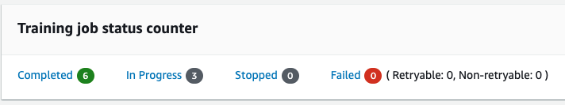
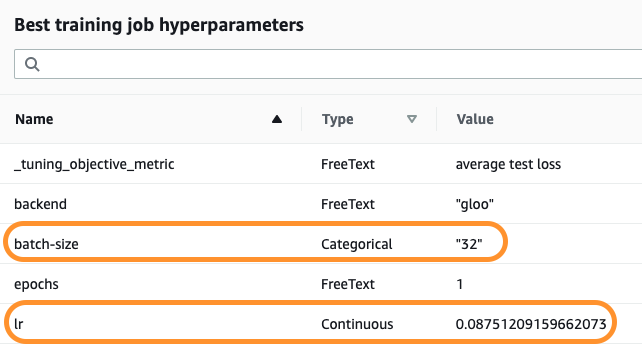

超参数调优
SageMaker 可以使用贝叶斯搜索或者随机搜索来寻找超参数的优化组合。 另外，SageMaker 还有热启动功能，可以通过迁移学习，使用新数据对超参数进行进一步优化。 示例 Notebook 在 sagemaker examples 中的 hyperparameter_tuning
确定需要调优的超参
如果以后要进行热启动，静态和待调优参数总和需一致，所以最好把可能需要优化的参数添加进来。
hyperparameter_ranges = {
"lr": ContinuousParameter(0.001, 0.1),
"batch-size": CategoricalParameter([32, 64, 128, 256, 512]),
}
确定目标度量值
指定根据哪一个目标值来判断参数的优化组合。
objective_metric_name = "average test loss"
objective_type = "Minimize"
metric_definitions = [{"Name": "average test loss", "Regex": "Test set: Average loss: ([0-9\\.]+)"}]
配置任务
estimator 和平常训练任务的定义一致， max_jobs 和 max_parallel_jobs 分别指定共进行多少个任务、并发最多多少个任务来搜寻最优组合。
tuner = HyperparameterTuner(
estimator,
objective_metric_name,
hyperparameter_ranges,
metric_definitions,
max_jobs=9,
max_parallel_jobs=3,
objective_type=objective_type,
)
运行任务
之后和训练任务一样，调用 fit 方法，传入数据。
tuner.fit({"training": inputs})
在 SageMaker 控制台可以查看到已完成、正在进行的训练数。

也可以看到找到的最优参数组合:

可以基于优化任务生成模型，也可以部署上线。
predictor = tuner.deploy(initial_instance_count=1, instance_type="ml.m4.xlarge")